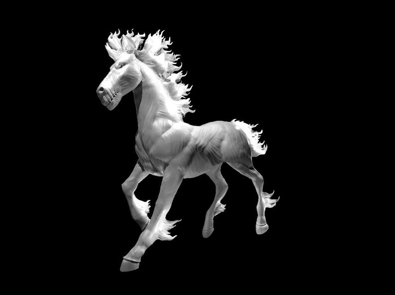
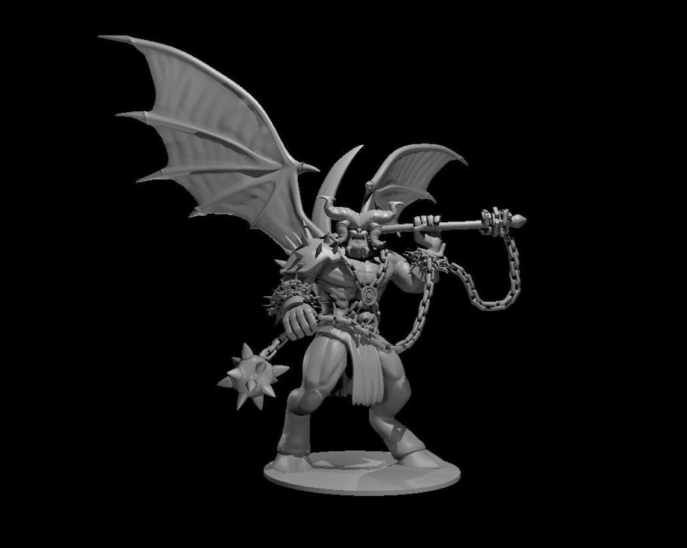
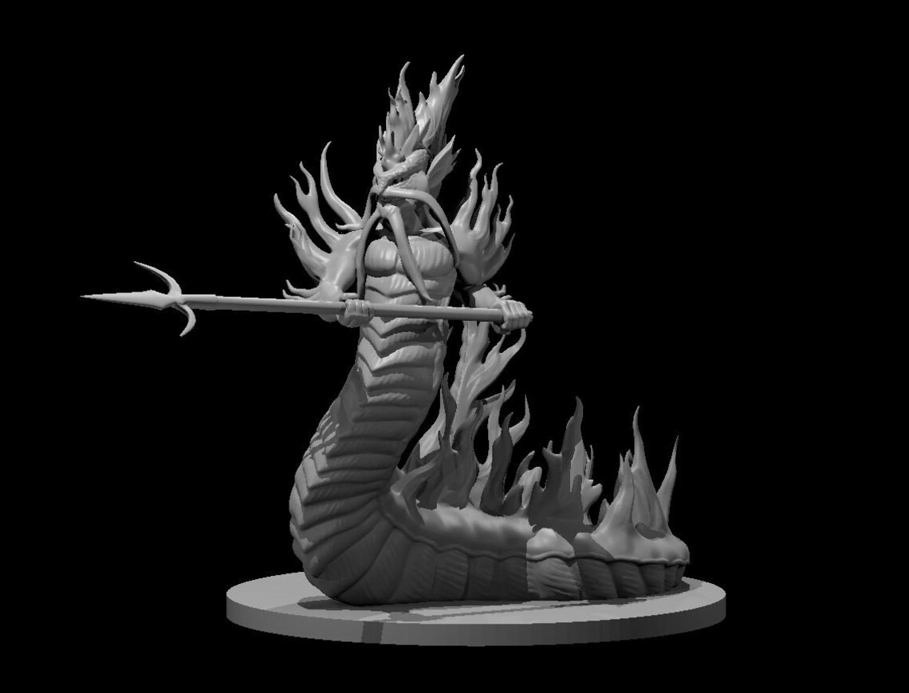
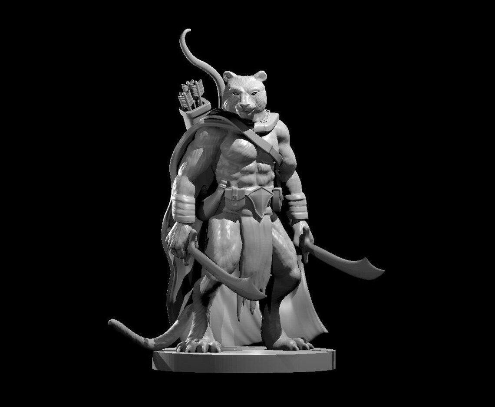

The Basics
3D printing is an additive technology used to manufacture parts or other 3D objects.
This is the opposite of subtractive manufacturing which takes a block of material
and cuts away material to shape a desired design. Because of this difference in how
it's made, 3D printing is much more material efficient since it uses only what's needed.
All 3D printers use computer-aided design (CAD) to render objects layer by layer. They
print these layers layer-by-layer. Projects can take hours since they will have hundreds
or even thousands of layers. The most commonly known printers are Fused Deposition Modeling
(FDM) and Sterolithography (SLA) printers.
Models
Check out some of our models to choose from!
MamasMinisShop




Fused Deposition Modeling (FDM)
FDM printers use filaments which are thermoplastic "threads" that melt rather than burn.
A spool of filament is fed into the extruder head which melts and applies the filament onto
the individual layers of the project. Hence why it could take hours, even most of the day for large
projects.
FDM printers often needs fine tuning, especially when changing filament types. The extruder temperature
will need to be adjusted for stronger or weaker filament. The bed and extruder may also needs to be
adjusted
over time. Many mid to higher end printers have an auto level function built into the programming. An
untuned printer can lead to large sections of the project without any structure. Or it could print a
large blob of plastic. Some times, it is a trial and error business.
Choose Your FDM Material Types
Select your material type at checkout
- Polylactic Acid (PLA)
Filament Properties:
- Printability: Excellent
- Color Selection: Excellent
- Heat Resistance: Poor
- Tensile Strength: Excellent
- Toughness: Poor
- UV Resistance: Excellent
- Moisture Resistance: Excellent
- Creep Resistance: Poor
- PETG (Polyethylene Terephthalate Glycol)
Filament Properties:
- Printability: Good
- Color Selection: Good
- Heat Resistance: Average
- Tensile Strength: Good
- Toughness: Good
- UV Resistance: Excellent
- Moisture Resistance: Poor
- Creep Resistance: Good
- TPE/TPU/TPC (Thermoplastic Elastomer/Polyurethane/Copolyester)
Filament Properties:
- Printability: Average
- Color Selection: Average
- Heat Resistance: Average
- Tensile Strength: Average
- Toughness: Excellent
- UV Resistance: Good
- Moisture Resistance: Poor
- Creep Resistance: Good
- ABS (Acrylonitrile Butadiene Styrene)
Filament Properties:
- Printability: Average
- Color Selection: Average
- Heat Resistance: Good
- Tensile Strength: Good
- Toughness: Good
- UV Resistance: Average
- Moisture Resistance: Good
- Creep Resistance: Excellent
- ASA (Acrylonitrile Styrene Acrylate)
Filament Properties:
- Printability: Good
- Color Selection: Average
- Heat Resistance: Good
- Tensile Strength: Good
- Toughness: Good
- UV Resistance: Excellent
- Moisture Resistance: Good
- Creep Resistance: Excellent
- PA (Polyamide or Nylon)
Filament Properties:
- Printability: Poor
- Color Selection: Poor
- Heat Resistance: Good
- Tensile Strength: Good
- Toughness: Excellent
- UV Resistance: Average
- Moisture Resistance: Poor
- Creep Resistance: Average
- PC (Polycarbonate)
Filament Properties:
- Printability: Poor
- Color Selection: Poor
- Heat Resistance: Excellent
- Tensile Strength: Excellent
- Toughness: Excellent
- UV Resistance: Excellent
- Moisture Resistance: Poor
- Creep Resistance: Excellent
Click here for
Sources
Sterolithography (SLA)
Even though there are different types of resin printing, stereolithography (SLA) is the more commonly
known method of "resin printing". It uses a liquid plastic and is hardened by exposing the resin to a UV
light source in the specific pattern needed to design the 3D model.
After the project is printed and UV light cured, it will need some post-processing called washing.
Washing is giving the project an agitated bath in isopropyl alcohol (IPA). This removes any resin
residue
and brings out the fine details that resin printers are known to yield.
Choose Your SLA Material Types
Select your material type at checkout.
- Standard Resin
Resin Properties:
- Smooth surface quality
- Highly detailed features and remarkable quality
- Very affordable
- Can break with little effort
- Minimal impact resistance
- Not suitable for functional parts
- Comes in the largest range of colors
- Clear Resin
Resin Properties:
- High-quality surface finish
- Makes transparent prints
- Water-resistant
- The clarity may degrade with time as the model is exposed to UV rays
- Tough Resin
Resin Properties:
- High impact and shatter-resistance
- Durable and sturdy
- Best for creating sturdy functional parts
- Not recommended for models with thin walls
- Print removal can be a little difficult compared to Standard Resin
- Flexible Resin
Resin Properties:
- Very flexible
- Great impact resistance
- Ideal for making flexible parts
- Can be hard to print with
- Mostly requires a good use of support structures
- Like Tough Resin, it's also not recommended for models with thin walls
- Water-Washable Resin
Resin Properties:
- Effortless post-processing with water instead of alcohol or other solutions
- Appreciable strength
- Fast curing speeds
- Good detail
- Can be dyed or painted easily
- Absorption of water in parts can generally make them crack
- Affordable
- Dental Resin
Resin Properties:
- High compressive strength
- Aesthetic appearance perfect for dental use
- Resistant to abrasion
- Ideal for surgical and dental appliances
- Average fracture-resistance
- Expensive
- Ceramic-Filled Resin
Resin Properties:
- Very tough and stiff
- Excellent for making fine-featured parts
- Highly resistant to heat
- Ideal for molds, jewelry, automotive applications, pipes, and manifolds
- Below-average impact strength
- Brittle
Click here for Sources